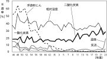

2024年
問題57 室内における二酸化炭素に関する次の記述のうち，最も不適当なものはどれか．
（1）建築物衛生法における二酸化炭素の管理基準値は，換気量の指標として定められた値である．
（2）東京都の立入検査結果から見ると，建築物衛生法施行当時の二酸化炭素の不適率は10～20%台であった．
（3）二酸化炭素の発生源は，ヒトの活動（呼吸）や燃焼器具である．
（4）二酸化炭素濃度の上昇には，在室者数が設計時の条件を上回るような過密使用状態が関係する．
（5）二酸化炭素濃度の低減対策として，空調機のエアフィルタが挙げられる．
2024年
問題57 正解（5） 頻出度AAA
空調機のエアフィルタは，基本的に浮遊粉じんの除去に用いられる．二酸化炭素のようなガス状物質の除去にはケミカルフィルタや専用の空気清浄装置がある（スペースシャトルでは水酸化リチウムを用いた装置が用いられている）が，基本的には新鮮外気導入による希釈・排出によってその濃度を基準内に保つことが行われている．
-(2) 建築物衛生法施行当時（昭和46年：1971年）の二酸化炭素濃度の不適率（2024-57-11図，2024-57-1表参照）．

出典 厚生労働省室内空気質のための必要換気量
https://www.mhlw.go.jp/content/11130500/000771220.pdf
| 温度 | ビル管理法施行当初は1%台の不適率であったが，近年は3～4%と低い率で推移していた．平成23年度においては節電の影響もあり20%近い不適があった． |
| 湿度 | 湿度 不適率は年間平均で30%，暖房期（12月～3月）では80%に達し，その原因の大部分は暖房期の低湿度である． |
| 気流 | 不適率は1%前後で不適率が最も低い項目の一つであるが，平成23年度は節電対策，クールビズで扇風機が使用され，局所気流で4%の不適率となった． |
| 一酸化炭素 | 不適率は低い（0～1%）．実例では，一酸化炭素の濃度が建物内で一様に高いという例は少なく，特定の時間帯や特定の階，居室で高いという例が多い．これは駐車場や厨房などからの排気の侵入が推測できる． |
| 二酸化炭素 | 不適率は10～20%で ，湿度に次いで不適率の高い項目であり，漸増する傾向にある． |
| 浮遊粉じん | かつては空気環境測定項目で最も不適率の高い項目であったが，50年代半ばから急激に改善され，近年では不適率0～1%である．不適率の改善の原因は事務室内での喫煙の減少，エアフィルタの高性能化，空気清浄機の利用など空調の浄化設計の進歩が考えられる． |